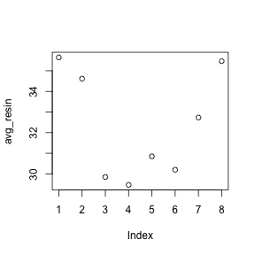
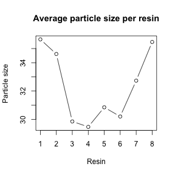

Working with data in a matrix
Loading data
Our example data is quality measurements (particle size) on PVC plastic production, using eight different resin batches, and three different machine operators.
The data set is stored in comma-separated value (CSV) format. Each row is a resin batch, and each column is an operator. In RStudio, open pvc.csv and have a look at what it contains.
read.csv("r-intro-files/pvc.csv", row.names=1)We have called read.csv with two arguments: the name of the file we want to read, and which column contains the row names. The filename needs to be a character string, so we put it in quotes. Assigning the second argument, row.names, to be 1 indicates that the data file has row names, and which column number they are stored in. If we don’t specify row.names the result will not have row names.
dat <- read.csv("r-intro-files/pvc.csv", row.names=1)dat## Alice Bob Carl
## Resin1 36.25 35.40 35.30
## Resin2 35.15 35.35 33.35
## Resin3 30.70 29.65 29.20
## Resin4 29.70 30.05 28.65
## Resin5 31.85 31.40 29.30
## Resin6 30.20 30.65 29.75
## Resin7 32.90 32.50 32.80
## Resin8 36.80 36.45 33.15class(dat)## [1] "data.frame"str(dat)## 'data.frame': 8 obs. of 3 variables:
## $ Alice: num 36.2 35.1 30.7 29.7 31.9 ...
## $ Bob : num 35.4 35.4 29.6 30.1 31.4 ...
## $ Carl : num 35.3 33.4 29.2 28.6 29.3 ...read.csv has loaded the data as a data frame. A data frame contains a collection of “things” (rows) each with a set of properties (columns) of different types.
Actually this data is better thought of as a matrix1. In a data frame the columns contain different types of data, but in a matrix all the elements are the same type of data. A matrix in R is like a mathematical matrix, containing all the same type of thing (usually numbers).
R often but not always lets these be used interchangably. It’s also helpful when thinking about data to distinguish between a data frame and a matrix. Different operations make sense for data frames and matrices.
Data frames are very central to R, and mastering R is very much about thinking in data frames. However when we get to RNA-Seq we will be using matrices of read counts, so it will be worth our time to learn to use matrices as well.
Let us insist to R that what we have is a matrix. as.matrix “casts” our data to have matrix type.
mat <- as.matrix(dat)
class(mat)## [1] "matrix"str(mat)## num [1:8, 1:3] 36.2 35.1 30.7 29.7 31.9 ...
## - attr(*, "dimnames")=List of 2
## ..$ : chr [1:8] "Resin1" "Resin2" "Resin3" "Resin4" ...
## ..$ : chr [1:3] "Alice" "Bob" "Carl"Much better.
Indexing matrices
We can check the size of the matrix with the functions nrow and ncol:
nrow(mat)## [1] 8ncol(mat)## [1] 3This tells us that our matrix, mat, has 8 rows and 3 columns.
If we want to get a single value from the matrix, we can provide a row and column index in square brackets:
# first value in mat
mat[1, 1]## [1] 36.25# a middle value in mat
mat[4, 2]## [1] 30.05If our matrix has row names and column names, we can also refer to rows and columns by name.
mat["Resin4","Bob"]## [1] 30.05An index like [4, 2] selects a single element of a matrix, but we can select whole sections as well. For example, we can select the first two operators (columns) of values for the first four resins (rows) like this:
mat[1:4, 1:2]## Alice Bob
## Resin1 36.25 35.40
## Resin2 35.15 35.35
## Resin3 30.70 29.65
## Resin4 29.70 30.05The slice 1:4 means the numbers from 1 to 4. It’s the same as c(1,2,3,4).
The slice does not need to start at 1, e.g. the line below selects rows 5 through 8:
mat[5:8, 1:2]## Alice Bob
## Resin5 31.85 31.40
## Resin6 30.20 30.65
## Resin7 32.90 32.50
## Resin8 36.80 36.45We can use vectors created with c to select non-contiguous values:
mat[c(1,3,5), c(1,3)]## Alice Carl
## Resin1 36.25 35.3
## Resin3 30.70 29.2
## Resin5 31.85 29.3We also don’t have to provide an index for either the rows or the columns. If we don’t include an index for the rows, R returns all the rows; if we don’t include an index for the columns, R returns all the columns. If we don’t provide an index for either rows or columns, e.g. mat[, ], R returns the full matrix.
# All columns from row 5
mat[5, ]## Alice Bob Carl
## 31.85 31.40 29.30# All rows from column 2
mat[, 2]## Resin1 Resin2 Resin3 Resin4 Resin5 Resin6 Resin7 Resin8
## 35.40 35.35 29.65 30.05 31.40 30.65 32.50 36.45Challenge - Subsetting data in a matrix
Suppose you want to determine the maximum particle size for resin 5 across operators 2 and 3. To do this you would extract the relevant slice from the matrix and calculate the maximum value. Which of the following lines of R code gives the correct answer?
max(dat[5, ])max(dat[2:3, 5])max(dat[5, 2:3])max(dat[5, 2, 3])
Summary functions
Now let’s perform some common mathematical operations to learn about our data. When analyzing data we often want to look at partial statistics, such as the maximum value per resin or the average value per operator. One way to do this is to select the data we want as a new temporary variable, and then perform the calculation on this subset:
# first row, all of the columns
resin_1 <- mat[1, ]
# max particle size for resin 1
max(resin_1)## [1] 36.25We don’t actually need to store the row in a variable of its own. Instead, we can combine the selection and the function call:
# max particle size for resin 2
max(mat[2, ])## [1] 35.35R has functions for other common calculations, e.g. finding the minimum, mean, median, and standard deviation of the data:
# minimum particle size for operator 3
min(mat[, 3])## [1] 28.65# mean for operator 3
mean(mat[, 3])## [1] 31.4375# median for operator 3
median(mat[, 3])## [1] 31.275# standard deviation for operator 3
sd(mat[, 3])## [1] 2.49453Summarizing matrices
What if we need the maximum particle size for all resins, or the average for each operator? As the diagram below shows, we want to perform the operation across a margin of the matrix:

To support this, we can use the apply function.
apply allows us to repeat a function on all of the rows (MARGIN = 1) or columns (MARGIN = 2) of a matrix. We can think of apply as collapsing the matrix down to just the dimension specified by MARGIN, with rows being dimension 1 and columns dimension 2 (recall that when indexing the matrix we give the row first and the column second).
Thus, to obtain the average particle size of each resin we will need to calculate the mean of all of the rows (MARGIN = 1) of the matrix.
avg_resin <- apply(mat, 1, mean)And to obtain the average particle size for each operator we will need to calculate the mean of all of the columns (MARGIN = 2) of the matrix.
avg_operator <- apply(mat, 2, mean)Since the second argument to apply is MARGIN, the above command is equivalent to apply(dat, MARGIN = 2, mean).
Challenge - summarizing the matrix
How would you calculate the standard deviation for each resin?
Advanced: How would you calculate the values two standard deviations above and below the mean for each resin?
t test
R has many statistical tests built in. One of the most commonly used tests is the t test. Do the means of two vectors differ significantly?
mat[1,]## Alice Bob Carl
## 36.25 35.40 35.30mat[2,]## Alice Bob Carl
## 35.15 35.35 33.35t.test(mat[1,], mat[2,])##
## Welch Two Sample t-test
##
## data: mat[1, ] and mat[2, ]
## t = 1.4683, df = 2.8552, p-value = 0.2427
## alternative hypothesis: true difference in means is not equal to 0
## 95 percent confidence interval:
## -1.271985 3.338652
## sample estimates:
## mean of x mean of y
## 35.65000 34.61667Actually, this can be considered a paired sample t-test, since the values can be paired up by operator. By default t.test performs an unpaired t test. We see in the documentation (?t.test) that we can give paired=TRUE as an argument in order to perform a paired t-test.
t.test(mat[1,], mat[2,], paired=TRUE)##
## Paired t-test
##
## data: mat[1, ] and mat[2, ]
## t = 1.8805, df = 2, p-value = 0.2008
## alternative hypothesis: true difference in means is not equal to 0
## 95 percent confidence interval:
## -1.330952 3.397618
## sample estimates:
## mean of the differences
## 1.033333Challenge - using t.test
Can you find a significant difference between any two resins?
When we call t.test it returns an object that behaves like a list. Recall that in R a list is a miscellaneous collection of values.
result <- t.test(mat[1,], mat[2,], paired=TRUE)
names(result)## [1] "statistic" "parameter" "p.value" "conf.int" "estimate"
## [6] "null.value" "alternative" "method" "data.name"result$p.value## [1] 0.2007814This means we can write software that uses the various results from t.test, for example performing a whole series of t tests and reporting the significant results.
Plotting
The mathematician Richard Hamming once said, “The purpose of computing is insight, not numbers,” and the best way to develop insight is often to visualize data. Visualization deserves an entire lecture (or course) of its own, but we can explore a few of R’s plotting features.
Let’s take a look at the average particle size per resin. Recall that we already calculated these values above using apply(mat, 1, mean) and saved them in the variable avg_resin. Plotting the values is done with the function plot.
plot(avg_resin)
Above, we gave the function plot a vector of numbers corresponding to the average per resin across all operators. plot created a scatter plot where the y-axis is the average particle size and the x-axis is the order, or index, of the values in the vector, which in this case correspond to the 8 resins.
plot can take many different arguments to modify the appearance of the output. Here is a plot with some extra arguments:
plot(avg_resin,
xlab="Resin",
ylab="Particle size",
main="Average particle size per resin",
type="b")
Let’s have a look at two other statistics: the maximum and minimum particle size per resin. Additional points or lines can be added to a plot with points or lines.
max_resin <- apply(mat, 1, max)
min_resin <- apply(mat, 1, min)
plot(avg_resin, type="b", ylim=c(25,40))
lines(max_resin)
lines(min_resin)
R doesn’t know to adjust the y limits if we add new data outside the original limits, so we needed to specify ylim manually. This is R’s base graphics system. If there is time today, we will look at a more advanced graphics package called “ggplot2” that handles this kind of issue more intelligently.
Challenge - plotting data
Create a plot showing the standard deviation for each resin.
Advanced: Create a plot showing +/- two standard deviations about the mean.
Saving plots
It’s possible to save a plot as a .PNG or .PDF from the RStudio interface with the “Export” button. However if we want to keep a complete record of exactly how we create each plot, we prefer to do this with R code.
Plotting in R is sent to a “device”. By default, this device is RStudio. However we can temporarily send plots to a different device, such as a .PNG file (png("filename.png")) or .PDF file (pdf("filename.pdf")).
pdf("test.pdf")
plot(avg_resin)
dev.off()dev.off() is very important. It tells R to stop outputting to the pdf device and return to using the default device. If you forget, your interactive plots will stop appearing as expected!
The file you created should appear in the file manager pane of RStudio, you can view it by clicking on it.
We use matrix here in the mathematical sense, not the biological sense.↩